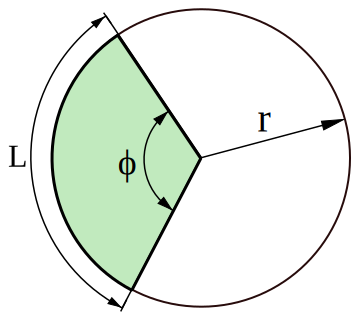

Chapter 3.6 - Hyperbolic Trajectories (\(e > 1\))¶
For the hyperbola, we identify \(a = 1\) and \(b = e > 1\), so the appropriate integral is then the third one:
Mean Anomaly¶
Defining the mean anomaly for the hyperbola as
we can write
Notice that \(\theta\) cannot exceed \(\theta_{\infty} = \cos^{-1}(-1 / e)\).
Hyperbolic Eccentric Anomaly¶
Similar to the ellipse, we will define an auxiliary angle \(F\) to simplify the equations. \(F\) is defined with reference to the hyperbola below.
Now, let’s define the ratio \(y/b\) as the hyperbolic sine of the angle \(F\):
Then, because
we can also define
Note
The hyperbolic angle \(F\) is weird. The reason we don’t draw it on the figure is because hyperbolic angles aren’t angles per se. Instead, they can be interpreted as half the area between the \(x\)-axis and a line drawn from the origin to the point of interest, bounded by the hyperbola. I think. At least, that’s my best interpretation from what I’ve been able to read. YMMV.
Another way of thinking about this is by analogy to a circle. For a circle, we can draw any two lines from the center of the circle to the perimeter. These two lines will have an angle \(\phi\) between them, and the area between them will be:

The area is called a circular sector. The image is modified from Wikimedia.
{kind=link}
If the circle is a unit circle (\(r = 1\)), then the area of the sector will be equal to the angle divided by two. Turned around, the angle is equal to twice the area:
Similarly, we can define the hyperbolic angle on the unit hyperbola as twice the area between two lines that start at the origin and touch the hyperbola, called a hyperbolic sector.

The area of the hyperbolic sector is half the hyperbolic angle. However, the circular angle between the \(x\)-axis and the ray from the origin is not the same as the hyperbolic angle.
You can read more about hyperbolic angles on Brilliant and on Wikipedia.
We can relate \(F\) to the true anomaly \(\theta\) by plugging in \(y = r\sin\theta\), and the orbit equation for \(r\). We also note that \(b = a\sqrt{e^2 - 1}\). Then:
After some more trigonometry and algebra, we find:
Substituting this back into Eq. (8), we find Kepler’s equation for the hyperbola:
As with the ellipse, Kepler’s equation can be solved easily if \(\theta\) is known, to be able to find \(F\). However, if time is the known quantity, then Kepler’s equation is transcendental and must be solved numerically.
To aid in the numerical solution, the derivative of Kepler’s equation for the hyperbola is:
In addition, we can estimate an initial value for the guess of \(F\) from the graph below, with a known \(M_h\) value. Note that the \(y\)-axis plots the log base 10 of \(M_h\). To use the graph, take the log base 10 of whatever value you calculate for \(M_h\) and find that on the graph.
Some more trigonometry and algebra lead us to a simpler relationship between \(F\) and \(\theta\), analogous to the equation for the ellipse:
and the inverse, to solve for \(\theta\) from \(F\):
Orbit Equation in Terms of Hyperbolic Eccentric Anomaly¶
It is useful to have the orbit equation in terms of \(F\), analogous to the ellipse. We find: